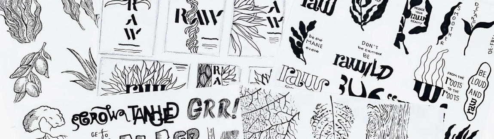
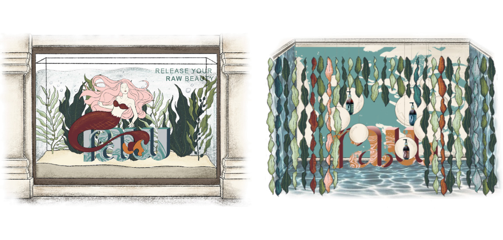
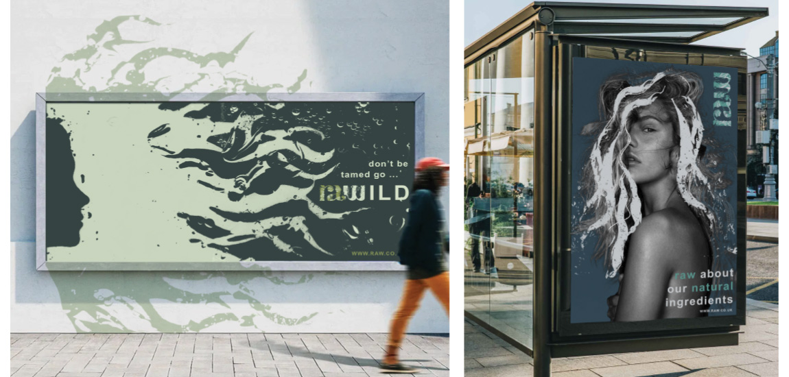
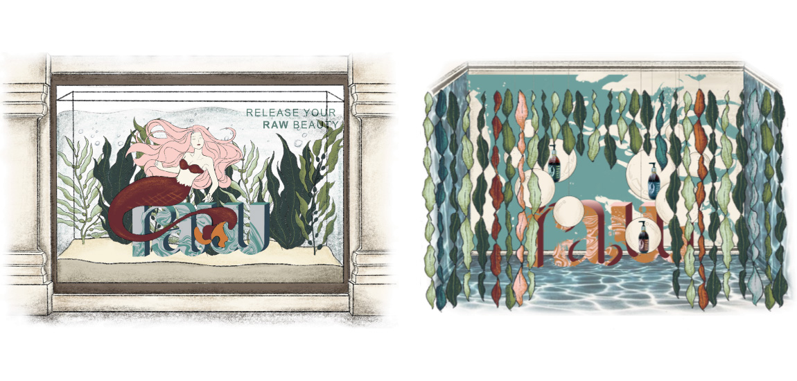
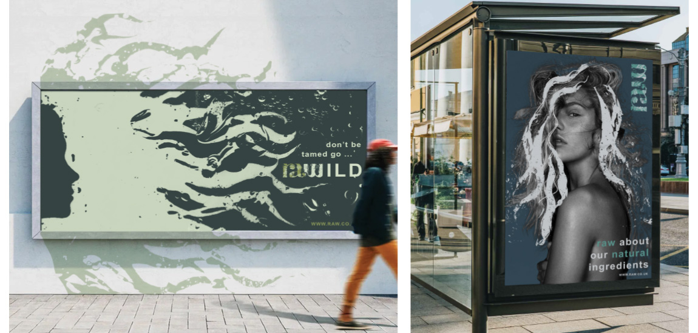

raw
A sea kelp hair care range for curly and wavy hair. Sea kelp makes hair nourished and wildly healthier whilst creating habitats for thousands of marine species and up taking carbon dioxide helping with climate change. Raw is in partnership with the Greenwave charity helping to ocean farming of kelp. Raw encourages to release your raw beauty.
To create this underwater feel, I used water and oil in a glass dish which was held over a screen with my type and illustration on. As I moved the liquid around the dish it distorted the imagery which I photographed and then edited on photoshop. It was a great way to create the underwater effect physically and it was an enjoyable process.
As well as making packaging which has a natural and organic feel to them I also looked at the brand world. This includes digital advertisement, a shop window marketing raw with a large tank with live sea kelp and a mermaid as well as a pop up event.
 


